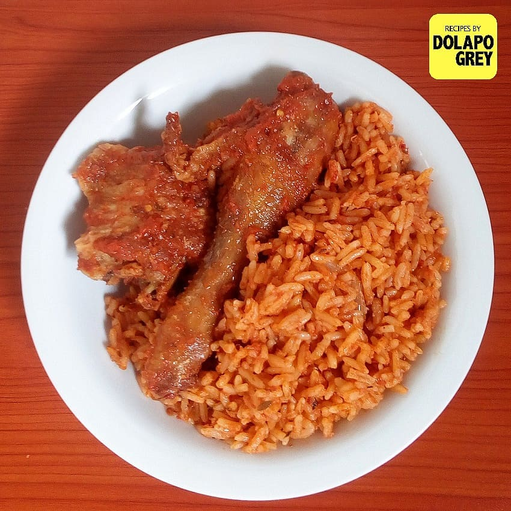

Jollof Rice

credit: Dolapo Grey
This is a foolproof recipe for cooking jollofRice, west Africa's most popular dish, best served with Smoked meat, Turkey or fried Chicken
Ingredients
- tomato
- onion
- pepper
- bell pepper
- garlic
- ginger
- groundnut oil
- tomato paste
- curry
- thyme
- salt
- seasoning cube
- bay leaf
Steps to make
- Place the base ingredients in a blender and blitz until smooth.
- Heat the vegetable oil in a large dutch oven set over a medium heat. Add the onion and cook,
stirring occasionally, for 3 minutes, then add the tomatoma paste and cook, stirring frequently , until it begins to darken , 3 to 5 minutes.
- Pour in the blended base , stir to combine and bring to a simmer. reduce the heat to medium-low and partially cover the pot with the lid - it will splatter!
Cook, stirring occationally, until the sauce is reduced by about a third of the original volume and the oil begins to separate from the sauce, 12 to 15 minutes.
- Stir in the curry powder,thyme ,stock,cubes,bay leaves and water.Season generously with salt and pepper, to taste the cover and bring oil over medium-high heat.
- Meanwhile, rinse the rice throughly with cold water until the ater runs clean, then drain.Add the rice to sauce and stir to combine. As soon as it comes to a boil
over medium heat.
- By this point , the rice should have absorbed all the liquid and be cooked through. Remove the bay leaves, give the rice a stir and you're ready to serve, preferably with grilled chicken,turkey and fried plantain
Enjoy your meal!
Homepage
\